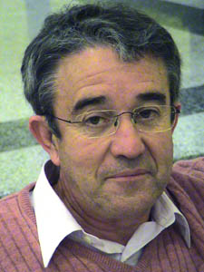

Jesús de Castro García
Jesús de Castro García  Jesús de Castro García
Jesús de Castro García 
 Haz clic aquí para detalles de la Familia de Jesús con Sofía Dávila Martín
Haz clic aquí para detalles de la Familia de Jesús con Sofía Dávila Martín
This page is within a frameset. View the entire genealogy report of de Castro García families, or surname index of de Castro García pedigrees or report summary of de Castro García heritage from "Árbol Genealógico de Manolo y Amalia".
Introduction About Genealogy.
© 2006 GenoPro Inc. All Rights Reserved.